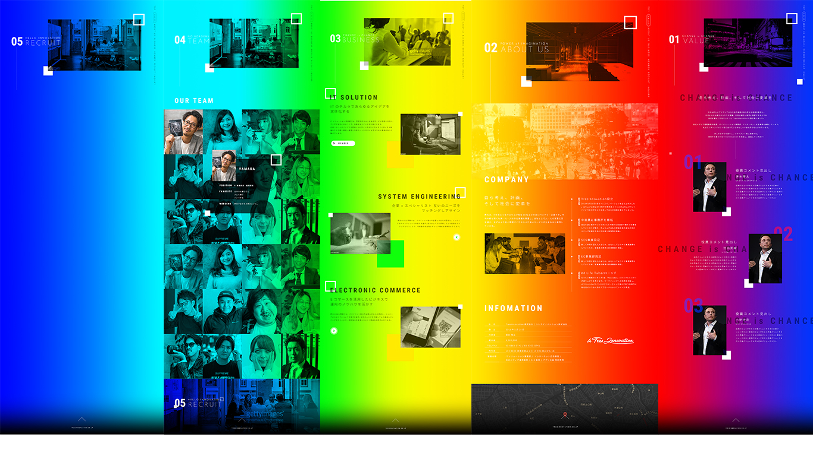
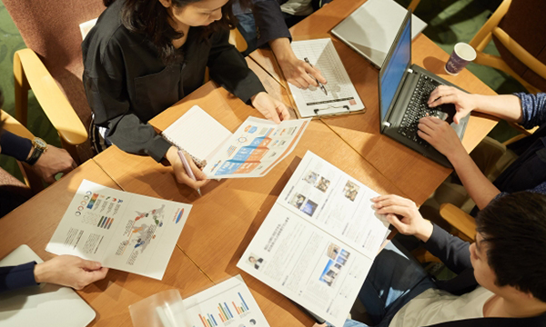
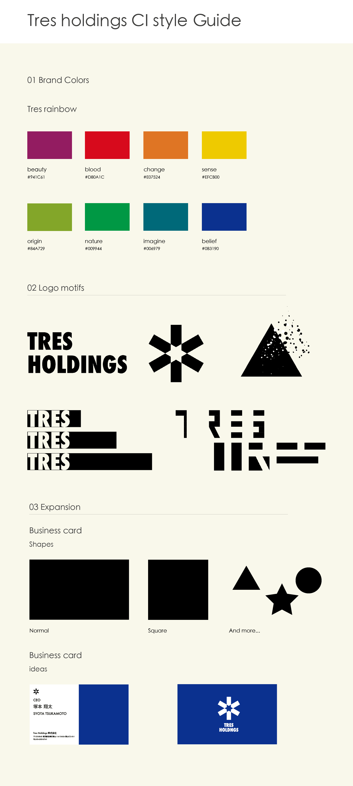
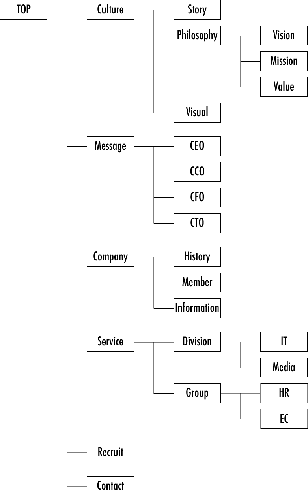

Tres innovation
Branding
期間
2018.12〜2019.1
顧客
担当
情報設計/ディレクション/デザイン(ブランディング)など
プロジェクト概要
トレスイノベーションは2018年9月〜現在まで自分が所属している会社です。このプロジェクトは、もともとコーポレートサイトのリニューアルをするために立ち上がったプロジェクトでしたが、
「ただコーポレートサイトを作るだけではなく、CIやVIをより固めていきたい」と提案し、会社自体のリブランディングを目指すプロジェクトになりました。
プロジェクト詳細
◆要望(デザインの雰囲気,規定など)
●スタイリッシュな感じ
●前任の方のデザインを活かして欲しい
●前任の方のデザインを活かして欲しい

◆ターゲット
●
会社に関わるすべての方々

アウトプット




TOP
：MVを含めた、HPの顔。各ページに遷移もできます。
Culture
：会社の理念,思想をまとめたページ。
Story/Philosophy/Visualの3構成になっていて、それぞれ会社の成り立ち/哲学(思想)/logoやcolorなどを記載する予定でした。
Message
：CEO/CCO/CFO/CTOからコメントをもらって掲載するページ。
Company
：会社の概要を掲載するページ。会社の生い立ち/メンバー/電話番号など。
Service
：会社の事業部やグループ会社を紹介するページ。
Recruit
：求人情報を載せるページ。
Contact
：問い合わせページ。
：MVを含めた、HPの顔。各ページに遷移もできます。
Culture
：会社の理念,思想をまとめたページ。
Story/Philosophy/Visualの3構成になっていて、それぞれ会社の成り立ち/哲学(思想)/logoやcolorなどを記載する予定でした。
Message
：CEO/CCO/CFO/CTOからコメントをもらって掲載するページ。
Company
：会社の概要を掲載するページ。会社の生い立ち/メンバー/電話番号など。
Service
：会社の事業部やグループ会社を紹介するページ。
Recruit
：求人情報を載せるページ。
Contact
：問い合わせページ。